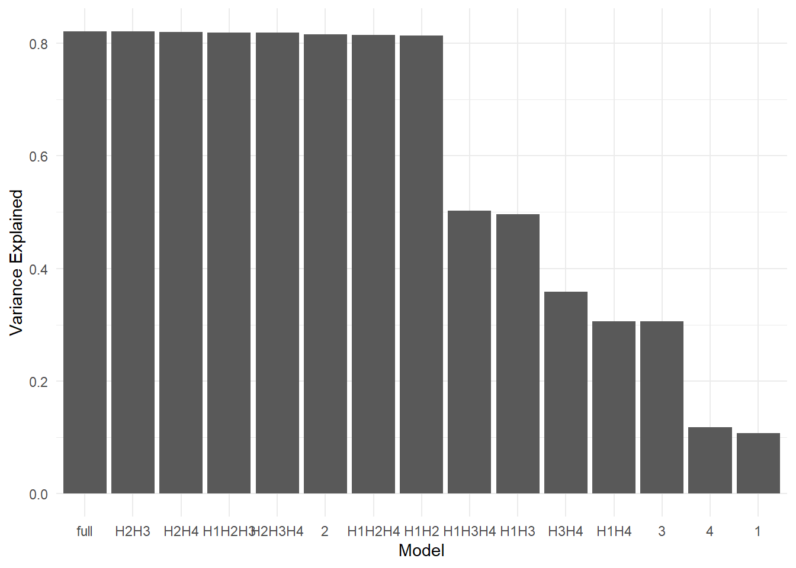
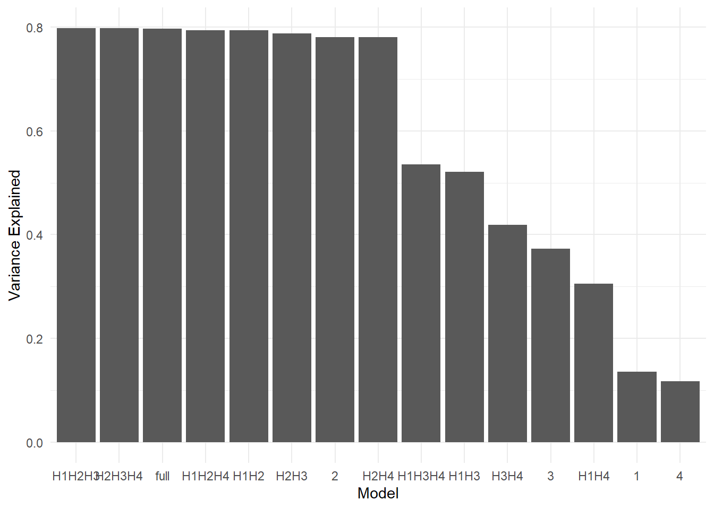
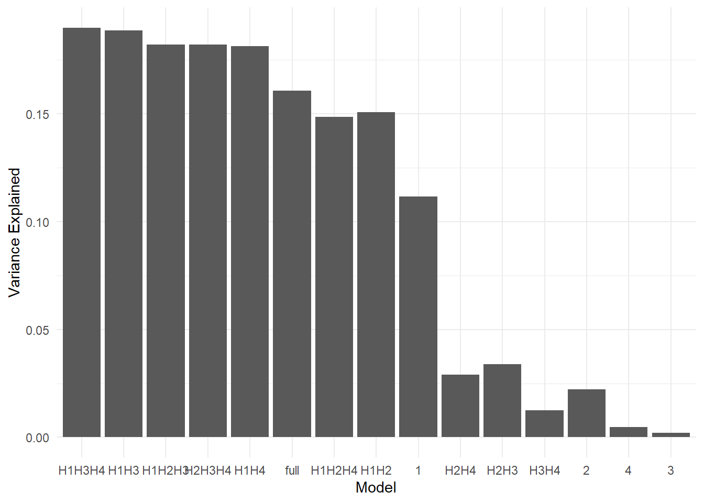
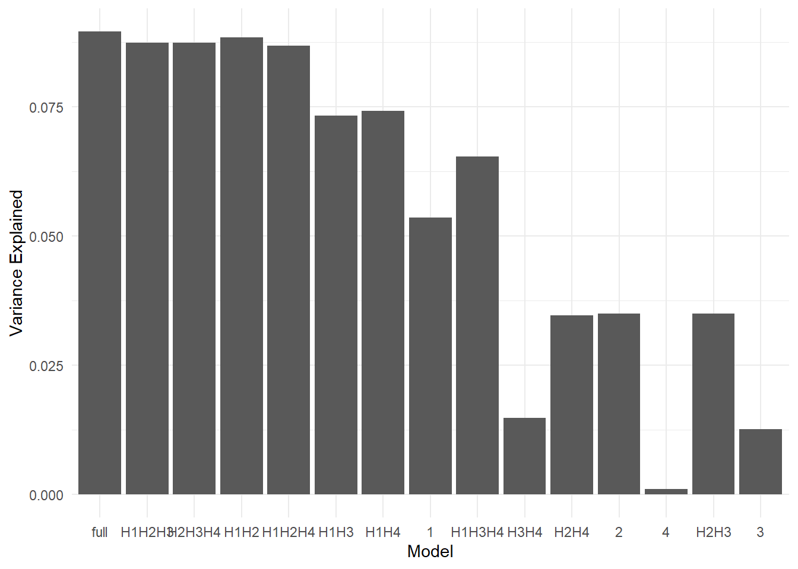

![]()
rm(list = ls())
#setwd("StaticPatterNN/")
source("src/functions.R")6 Script 5 - Variation Partitioning
pckgs <- c("dplyr", "ggplot2", "reshape2",
"ggcorrplot",
"caret", "recipes", "caretEnsemble",
"randomForest", "ranger", "gbm", "xgboost",
"vegan", "pdp",
"gridExtra", "kableExtra")
install_and_load(pckgs)# Load workspace to save computing time:
## it has: varPart from ranger models
## recursive feature selection results
# load("data/varPart_rfe.RData")
# load("data/models.RData")
# load("data/RData/01_Data_prep.RData")
load("data/RData/05_VarPart_loop.RData")6.0.1 Variation Partitioning between Hypotheses
Now we will look which of the four hypotheses explains most variation in the response.
index_list <- list(indices_J1, indices_J2, indices_LR1, indices_LR2)
dat_train_list <- list(dat_train_J1, dat_train_J2, dat_train_LR1, dat_train_LR2)
response_list <- c("Jaccard", "Jaccard", "log_R2_1", "log_R2_1")
varPart_list <- replicate(4, list())
for(i in seq_along(1:4)){
dat_train <- dat_train_list[[i]]
index <- index_list[[i]]
response <- response_list[[i]]
trainControl <- trainControl(
method = "repeatedcv",
number = 10,
repeats = 3,
savePredictions = "final",
returnResamp = "final",
verboseIter = FALSE,
index = index)
tictoc::tic("ranger full model")
set.seed(42)
full_model <- train(
as.formula(paste0(response, "~ .")),
data = dat_train,
method = "ranger",
trControl = trainControl,
importance = "permutation",
scale.permutation.importance = TRUE,
num.trees = 5000,
respect.unordered.factors = TRUE,
oob.error = TRUE,
tuneLength = 5)
tictoc::toc()
# Train ranger model
tictoc::tic("ranger H1")
set.seed(42)
H1_model <- train(
as.formula(paste0(response, "~ .")),
data = dat_train %>% select(response, any_of(H1_vars)),
method = "ranger",
trControl = trainControl,
importance = "permutation",
scale.permutation.importance = TRUE,
num.trees = 5000,
respect.unordered.factors = TRUE,
oob.error = TRUE,
tuneLength = 5)
tictoc::toc()
tictoc::tic("ranger H2")
set.seed(42)
H2_model <- train(
as.formula(paste0(response, "~ .")),
data = dat_train %>% select(response, any_of(H2_vars)),
method = "ranger",
trControl = trainControl,
importance = "permutation",
scale.permutation.importance = TRUE,
num.trees = 5000,
respect.unordered.factors = TRUE,
oob.error = TRUE,
tuneLength = 5)
tictoc::toc()
tictoc::tic("ranger H3")
set.seed(42)
H3_model <- train(
as.formula(paste0(response, "~ .")),
data = dat_train %>% select(response, any_of(H3_vars)),
method = "ranger",
trControl = trainControl,
importance = "permutation",
scale.permutation.importance = TRUE,
num.trees = 5000,
respect.unordered.factors = TRUE,
oob.error = TRUE,
tuneLength = 5)
tictoc::toc()
tictoc::tic("ranger H4")
set.seed(42)
H4_model <- train(
as.formula(paste0(response, "~ .")),
data = dat_train %>% select(response, any_of(H4_vars)),
method = "ranger",
trControl = trainControl,
importance = "permutation",
scale.permutation.importance = TRUE,
num.trees = 5000,
respect.unordered.factors = TRUE,
oob.error = TRUE,
tuneLength = 5)
tictoc::toc()
### combinations of 2 hypotheses:
set.seed(42)
H1H2_model <- train(
as.formula(paste0(response, "~ .")),
data = dat_train %>% select(response, any_of(c(H1_vars, H2_vars))),
method = "ranger",
trControl = trainControl,
importance = "permutation",
scale.permutation.importance = TRUE,
num.trees = 5000,
respect.unordered.factors = TRUE,
oob.error = TRUE,
tuneLength = 5)
set.seed(42)
H1H3_model <- train(
as.formula(paste0(response, "~ .")),
data = dat_train %>% select(response, any_of(c(H1_vars, H3_vars))),
method = "ranger",
trControl = trainControl,
importance = "permutation",
scale.permutation.importance = TRUE,
num.trees = 5000,
respect.unordered.factors = TRUE,
oob.error = TRUE,
tuneLength = 5)
set.seed(42)
H1H4_model <- train(
as.formula(paste0(response, "~ .")),
data = dat_train %>% select(response, any_of(c(H1_vars, H4_vars))),
method = "ranger",
trControl = trainControl,
importance = "permutation",
scale.permutation.importance = TRUE,
num.trees = 5000,
respect.unordered.factors = TRUE,
oob.error = TRUE,
tuneLength = 5)
set.seed(42)
H2H3_model <- train(
as.formula(paste0(response, "~ .")),
data = dat_train %>% select(response, any_of(c(H2_vars, H3_vars))),
method = "ranger",
trControl = trainControl,
importance = "permutation",
scale.permutation.importance = TRUE,
num.trees = 5000,
respect.unordered.factors = TRUE,
oob.error = TRUE,
tuneLength = 5)
set.seed(42)
H2H4_model <- train(
as.formula(paste0(response, "~ .")),
data = dat_train %>% select(response, any_of(c(H2_vars, H4_vars))),
method = "ranger",
trControl = trainControl,
importance = "permutation",
scale.permutation.importance = TRUE,
num.trees = 5000,
respect.unordered.factors = TRUE,
oob.error = TRUE,
tuneLength = 5)
set.seed(42)
H3H4_model <- train(
as.formula(paste0(response, "~ .")),
data = dat_train %>% select(response, any_of(c(H3_vars, H4_vars))),
method = "ranger",
trControl = trainControl,
importance = "permutation",
scale.permutation.importance = TRUE,
num.trees = 5000,
respect.unordered.factors = TRUE,
oob.error = TRUE,
tuneLength = 5)
### combinations of 3 hypotheses together =====
set.seed(42)
H1H2H3_model <- train(
as.formula(paste0(response, "~ .")),
data = dat_train %>% select(response, any_of(c(H1_vars, H2_vars, H3_vars))),
method = "ranger",
trControl = trainControl,
importance = "permutation",
scale.permutation.importance = TRUE,
num.trees = 5000,
respect.unordered.factors = TRUE,
oob.error = TRUE,
tuneLength = 5)
set.seed(42)
H1H2H4_model <- train(
as.formula(paste0(response, "~ .")),
data = dat_train %>% select(response, any_of(c(H1_vars, H2_vars, H4_vars))),
method = "ranger",
trControl = trainControl,
importance = "permutation",
scale.permutation.importance = TRUE,
num.trees = 5000,
respect.unordered.factors = TRUE,
oob.error = TRUE,
tuneLength = 5)
set.seed(42)
H1H3H4_model <- train(
as.formula(paste0(response, "~ .")),
data = dat_train %>% select(response, any_of(c(H1_vars, H3_vars, H4_vars))),
method = "ranger",
trControl = trainControl,
importance = "permutation",
scale.permutation.importance = TRUE,
num.trees = 5000,
respect.unordered.factors = TRUE,
oob.error = TRUE,
tuneLength = 5)
set.seed(42)
H2H3H4_model <- train(
as.formula(paste0(response, "~ .")),
data = dat_train %>% select(response, any_of(c(H1_vars, H2_vars, H3_vars))),
method = "ranger",
trControl = trainControl,
importance = "permutation",
scale.permutation.importance = TRUE,
num.trees = 5000,
respect.unordered.factors = TRUE,
oob.error = TRUE,
tuneLength = 5)
varPart_list[[i]] <- list(
full_model, H1_model, H2_model, H3_model, H4_model,
H1H2_model, H1H3_model, H1H4_model,
H2H3_model, H2H4_model,
H3H4_model,
H1H2H3_model, H1H2H4_model, H1H3H4_model,
H2H3H4_model)
}
saveRDS(varPart_list, "data/varPart_list_loop.rds")# ===== Performance eval ======= #
performance <- list()
performance_all <- list()
plots <- list()
dat_test_list <- list(dat_test_J1, dat_test_J2, dat_test_LR1, dat_test_LR2)
for(i in seq_along(1:4)){
dat_test <- dat_test_list[[i]]
index <- index_list[[i]]
response <- response_list[[i]]
models <- varPart_list[[i]]
# Predict on your test data
predictions_full <- predict(models[[1]], newdata = dat_test)
predictions_H1 <- predict(models[[2]], newdata = dat_test)
predictions_H2 <- predict(models[[3]], newdata = dat_test)
predictions_H3 <- predict(models[[4]], newdata = dat_test)
predictions_H4 <- predict(models[[5]], newdata = dat_test)
predictions_H1H2 <- predict(models[[6]], newdata = dat_test)
predictions_H1H3 <- predict(models[[7]], newdata = dat_test)
predictions_H1H4 <- predict(models[[8]], newdata = dat_test)
predictions_H2H3 <- predict(models[[9]], newdata = dat_test)
predictions_H2H4 <- predict(models[[10]], newdata = dat_test)
predictions_H3H4 <- predict(models[[11]], newdata = dat_test)
predictions_H1H2H3 <- predict(models[[12]], newdata = dat_test)
predictions_H1H2H4 <- predict(models[[13]], newdata = dat_test)
predictions_H1H3H4 <- predict(models[[14]], newdata = dat_test)
predictions_H2H3H4 <- predict(models[[15]], newdata = dat_test)
# Calculate the performance metrics
perf <- rbind(postResample(pred = predictions_full, obs = dat_test %>% pull(response)),
postResample(pred = predictions_H1, obs = dat_test %>% pull(response)),
postResample(pred = predictions_H2, obs = dat_test %>% pull(response)),
postResample(pred = predictions_H3, obs = dat_test %>% pull(response)),
postResample(pred = predictions_H4, obs = dat_test %>% pull(response)),
postResample(pred = predictions_H1H2, obs = dat_test %>% pull(response)),
postResample(pred = predictions_H1H3, obs = dat_test %>% pull(response)),
postResample(pred = predictions_H1H4, obs = dat_test %>% pull(response)),
postResample(pred = predictions_H2H3, obs = dat_test %>% pull(response)),
postResample(pred = predictions_H2H4, obs = dat_test %>% pull(response)),
postResample(pred = predictions_H3H4, obs = dat_test %>% pull(response)),
postResample(pred = predictions_H1H2H3, obs = dat_test %>% pull(response)),
postResample(pred = predictions_H1H2H4, obs = dat_test %>% pull(response)),
postResample(pred = predictions_H1H3H4, obs = dat_test %>% pull(response)),
postResample(pred = predictions_H2H3H4, obs = dat_test %>% pull(response))) %>%
as.data.frame() %>%
round(4)
model <- c("full",
seq(1:4),
"H1H2", "H1H3", "H1H4", "H2H3", "H2H4", "H3H4",
"H1H2H3", "H1H2H4", "H1H3H4", "H2H3H4")
perf$model <- model
perf$subset <- paste0(response,"_", i)
# Print the performance metrics
perf %>%
kableExtra::kable()
perf %>%
kableExtra::kable() %>%
write.csv(paste0("data/csv/performance_varExpl_rf_loop_", response,"_",i, ".csv"))
performance[[i]] <- slice_min(perf, RMSE) %>%
slice_max(Rsquared)
performance_all[[i]] <- perf
# Create a bar plot of variance explained
plots[[i]] <- ggplot(perf, aes(x = reorder(model, RMSE), y = Rsquared)) +
geom_bar(stat = "identity") +
labs(x = "Model", y = "Variance Explained") +
theme_minimal()
}
do.call(rbind, performance) %>% kableExtra::kable()| RMSE | Rsquared | MAE | model | subset |
|---|---|---|---|---|
| 0.1165 | 0.8203 | 0.0742 | full | Jaccard_1 |
| 0.1247 | 0.7974 | 0.0807 | H1H2H3 | Jaccard_2 |
| 0.1247 | 0.7974 | 0.0807 | H2H3H4 | Jaccard_2 |
| 0.4538 | 0.1899 | 0.2953 | H1H3H4 | log_R2_1_3 |
| 0.5129 | 0.0895 | 0.2932 | full | log_R2_1_4 |
do.call(rbind, performance_all) %>% kableExtra::kable()| RMSE | Rsquared | MAE | model | subset |
|---|---|---|---|---|
| 0.1165 | 0.8203 | 0.0742 | full | Jaccard_1 |
| 0.2593 | 0.1080 | 0.2185 | 1 | Jaccard_1 |
| 0.1181 | 0.8159 | 0.0761 | 2 | Jaccard_1 |
| 0.2365 | 0.3063 | 0.1855 | 3 | Jaccard_1 |
| 0.2576 | 0.1182 | 0.2193 | 4 | Jaccard_1 |
| 0.1188 | 0.8137 | 0.0749 | H1H2 | Jaccard_1 |
| 0.1948 | 0.4960 | 0.1524 | H1H3 | Jaccard_1 |
| 0.2282 | 0.3058 | 0.1851 | H1H4 | Jaccard_1 |
| 0.1166 | 0.8205 | 0.0749 | H2H3 | Jaccard_1 |
| 0.1170 | 0.8192 | 0.0755 | H2H4 | Jaccard_1 |
| 0.2224 | 0.3581 | 0.1779 | H3H4 | Jaccard_1 |
| 0.1171 | 0.8183 | 0.0743 | H1H2H3 | Jaccard_1 |
| 0.1185 | 0.8146 | 0.0747 | H1H2H4 | Jaccard_1 |
| 0.1936 | 0.5022 | 0.1508 | H1H3H4 | Jaccard_1 |
| 0.1171 | 0.8183 | 0.0743 | H2H3H4 | Jaccard_1 |
| 0.1248 | 0.7970 | 0.0806 | full | Jaccard_2 |
| 0.2595 | 0.1364 | 0.2206 | 1 | Jaccard_2 |
| 0.1299 | 0.7807 | 0.0844 | 2 | Jaccard_2 |
| 0.2229 | 0.3726 | 0.1748 | 3 | Jaccard_2 |
| 0.2604 | 0.1175 | 0.2206 | 4 | Jaccard_2 |
| 0.1259 | 0.7932 | 0.0819 | H1H2 | Jaccard_2 |
| 0.1929 | 0.5210 | 0.1594 | H1H3 | Jaccard_2 |
| 0.2310 | 0.3052 | 0.1903 | H1H4 | Jaccard_2 |
| 0.1280 | 0.7869 | 0.0820 | H2H3 | Jaccard_2 |
| 0.1300 | 0.7802 | 0.0841 | H2H4 | Jaccard_2 |
| 0.2112 | 0.4193 | 0.1717 | H3H4 | Jaccard_2 |
| 0.1247 | 0.7974 | 0.0807 | H1H2H3 | Jaccard_2 |
| 0.1257 | 0.7938 | 0.0819 | H1H2H4 | Jaccard_2 |
| 0.1898 | 0.5354 | 0.1549 | H1H3H4 | Jaccard_2 |
| 0.1247 | 0.7974 | 0.0807 | H2H3H4 | Jaccard_2 |
| 0.4614 | 0.1608 | 0.2793 | full | log_R2_1_3 |
| 0.4793 | 0.1116 | 0.3031 | 1 | log_R2_1_3 |
| 0.5045 | 0.0221 | 0.2990 | 2 | log_R2_1_3 |
| 0.5499 | 0.0021 | 0.3673 | 3 | log_R2_1_3 |
| 0.5051 | 0.0046 | 0.3209 | 4 | log_R2_1_3 |
| 0.4647 | 0.1507 | 0.2798 | H1H2 | log_R2_1_3 |
| 0.4542 | 0.1887 | 0.2964 | H1H3 | log_R2_1_3 |
| 0.4574 | 0.1814 | 0.2972 | H1H4 | log_R2_1_3 |
| 0.5031 | 0.0339 | 0.3006 | H2H3 | log_R2_1_3 |
| 0.5015 | 0.0291 | 0.2976 | H2H4 | log_R2_1_3 |
| 0.5040 | 0.0124 | 0.3207 | H3H4 | log_R2_1_3 |
| 0.4568 | 0.1822 | 0.2768 | H1H2H3 | log_R2_1_3 |
| 0.4645 | 0.1485 | 0.2804 | H1H2H4 | log_R2_1_3 |
| 0.4538 | 0.1899 | 0.2953 | H1H3H4 | log_R2_1_3 |
| 0.4568 | 0.1822 | 0.2768 | H2H3H4 | log_R2_1_3 |
| 0.5129 | 0.0895 | 0.2932 | full | log_R2_1_4 |
| 0.5206 | 0.0535 | 0.3033 | 1 | log_R2_1_4 |
| 0.5373 | 0.0350 | 0.3153 | 2 | log_R2_1_4 |
| 0.5661 | 0.0127 | 0.3546 | 3 | log_R2_1_4 |
| 0.5387 | 0.0011 | 0.3314 | 4 | log_R2_1_4 |
| 0.5132 | 0.0884 | 0.2916 | H1H2 | log_R2_1_4 |
| 0.5196 | 0.0733 | 0.3027 | H1H3 | log_R2_1_4 |
| 0.5198 | 0.0742 | 0.3053 | H1H4 | log_R2_1_4 |
| 0.5390 | 0.0350 | 0.3180 | H2H3 | log_R2_1_4 |
| 0.5363 | 0.0346 | 0.3146 | H2H4 | log_R2_1_4 |
| 0.5336 | 0.0148 | 0.3273 | H3H4 | log_R2_1_4 |
| 0.5131 | 0.0873 | 0.2919 | H1H2H3 | log_R2_1_4 |
| 0.5140 | 0.0868 | 0.2928 | H1H2H4 | log_R2_1_4 |
| 0.5224 | 0.0654 | 0.3082 | H1H3H4 | log_R2_1_4 |
| 0.5131 | 0.0873 | 0.2919 | H2H3H4 | log_R2_1_4 |
plots[[1]]
[[2]]
[[3]]
[[4]]
:::
# save.image("data/RData/05_VarPart_loop.RData")